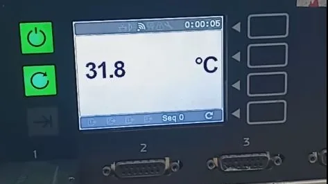
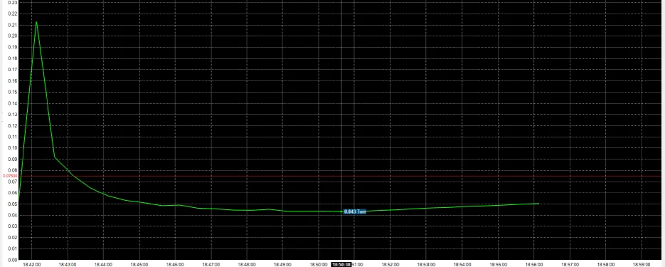
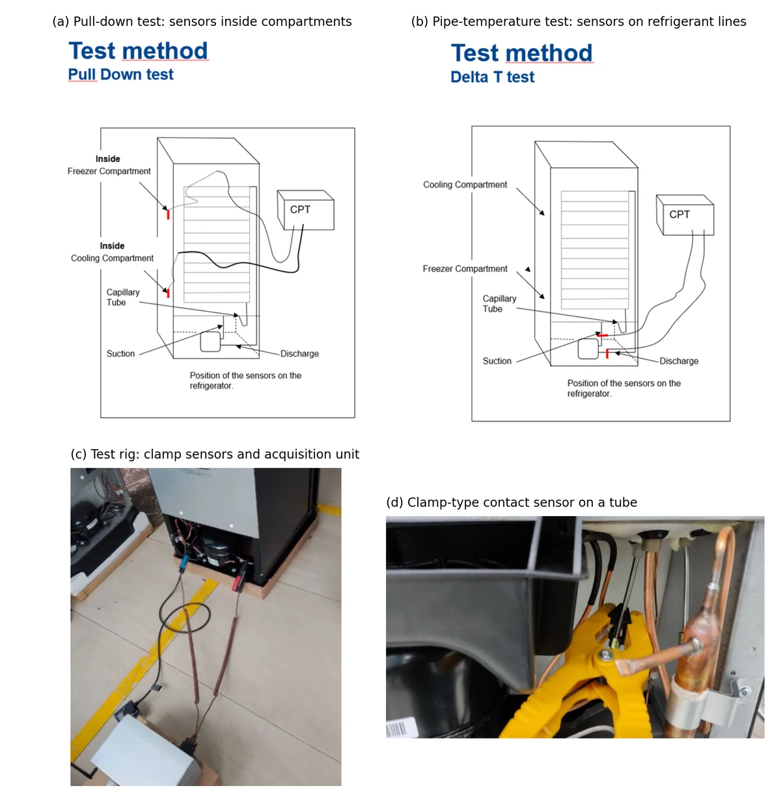
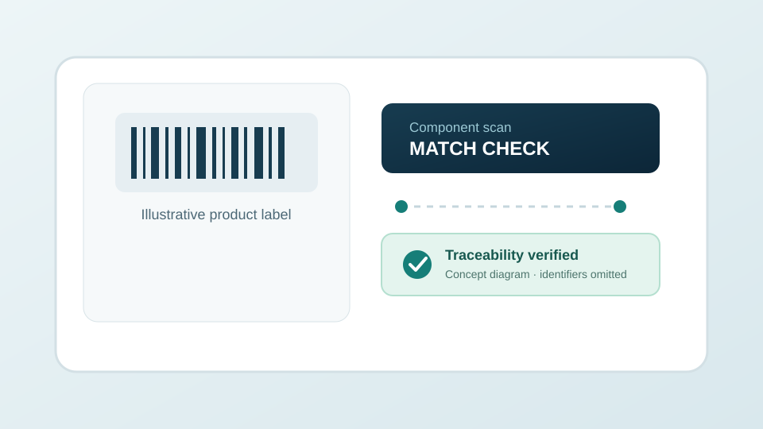

⌁
Industrial measurement
Sensor integration and interpretation of in-process operating measurements.
SMART MANUFACTURING · PROCESS MEASUREMENT · QUALITY ENGINEERING
My industrial work connects sensor-based monitoring, manufacturing traceability, fixture improvement and engineering analysis to repeatable quality and production decisions.

Only this research track
These themes are selected specifically for this specialization.
Sensor integration and interpretation of in-process operating measurements.
Traceability, SOPs and process controls that reduce ambiguity and rework.
FEA-informed component redesign and engineering-change validation.
Evidence-led methods
Map the process and critical variables
Connect sensors and traceable product records
Compare before/after performance and variation
Translate evidence into SOPs and process controls
Selected work
Only the projects that materially support this track are featured.

Industrial case studyWorked on real-time vacuum monitoring to improve visibility into cooling-circuit evacuation conditions.
My involvement: Sensor and process-system implementation
Evidence: Industrial monitoring implementation.

Industrial case studyEvaluated booster pumping, vacuum-pressure compressor application, dual hoses and pump upgrades as part of a manufacturing reliability program.
My involvement: Process evaluation and implementation
Evidence: Reported choking issue rate 0.13% to 0.02% across 2021–2025; multiple interventions were involved.

Industrial case studySupported cross-verification of compressor and finished-product identifiers in assembly operations.
My involvement: Workflow and process engineering
Evidence: Traceability workflow; independent defect-reduction metric not supplied.
Future research
Which factory signals best predict quality problems before final inspection?
How can traceability data and sensor measurements be combined without losing operational interpretability?
I welcome discussions with research groups whose work connects to Smart Manufacturing & Industry 4.0.
Academic profile and contact ↗